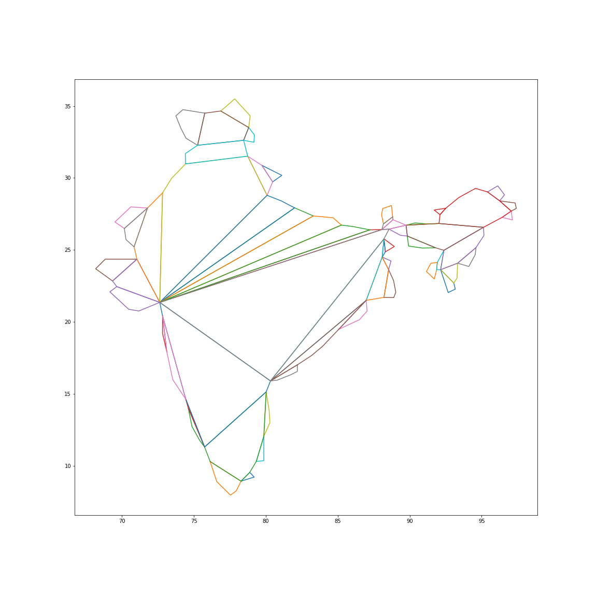

In this assignment, we are required to decompose any arbitrary polygon into convex polygons by implementing the algorithm described in the following paper:
Fernández, J., Cánovas, L., & Pelegrın, B. (2000). Algorithms for the decomposition of a polygon into ́ convex polygons. European Journal of Operational Research, 121(2), 330-342.
A convex decomposition of a polygon P is a set of convex polygons whose union gives P, and such that the intersection of any two of them, if non-empty, consists totally of edges and vertices. For any arbitrary convex polygon, we are required to break it into multiple possible convex polygons.

This image shows the plot of India, plotted using 135 points. The given shape is still not convex, thus we break it into disjoint sets of convex polygons as shown in the following image
The above image shows the final figure after decomposing the figure into multiple convex polygons. Thus the polygon is no longer concave. This final figure is obtained after applying the three-step algorithm:
Decomposition Algorithm is the first step of the three-step algorithm used in implementing the given task of breaking the polygon into disjoint sets of convex polygons. Given a set of vertices in clockwise cyclic order, we start from a single vertex (the first vertex in the list of vertices).
We make a list in which we keep on adding adjacent vertices as long as the polygon created by the vertices in the list is convex. The point at which we stop adding vertices to the list is the point when we encounter a point having a reflex angle with the previous and next vertices or a reflex angle is formed at the first/last vertex of the list.
Thus convex polygons are formed after we create a diagonal edge between the first and last vertices and cut it off from the rest of the polygon. We then repeat the process on the rest of the polygon, creating a new convex polygon in every iteration until we eventually break the entire polygon into convex polygons.
In the Decomposition Algorithm, the decomposition assumes an initial vertex, and the decision of this assumption decides the number of partitions. In order to find the minimum number of partitions that can be obtained by using the Decomposition Algorithm, the choice of initial vertex from which the decomposition is started needs to be determined. One interesting fact is that if the first convex polygon formed by the Decomposition Algorithm is the same starting from two vertices, the remaining decomposition is the same too.
To take advantage of this fact, only the first convex polygon that would be formed on decomposition starting from a vertex are compared, with the first convex polygons formed by vertices in the set of minimum cardinality. Only if these differ, the whole decomposition is done, and then the cardinality is checked. The result of Vertex Dependency Process, is a set of polygons such that they have the minimum partitions that can be obtained starting from all the vertices of the polygon.
In the merging process, the concept of essential diagonals is discussed. It is seen that it may be possible that there are some convex polygons obtained as the result of the above algorithms, such that if we consider the diagonal that divides the two polygons, that diagonal can be removed and the the new polygon formed on doing so is still a convex polygon. This process is called the merging process, and the result of applying this process gives a polygon with a lesser number of final partitions.
The steps of the merging process are as follows: Consider each diagonal of the polygon obtained after applying the Vertex Dependency Process. The first thing to check is whether the end-vertices of the diagonal have any other diagonals originating from them. Either, the count of such diagonals for both the end-vertices should be greater than 2 for us to remove this diagonal from the polygon; or if count is less than 2 for one vertex, then that vertex has to be a convex vertex in the original polygon (before decomposition); or it can be the case that both the end-vertices are convex vertices. Further in order to apply the merging process to these 2 polygons, the interior angles formed by the diagonal and the adjacent vertices in both the polygons must not be reflex angles. The diagonals satisfying these conditions are removed, resulting in a polygon with a minimum number of partitions.
This graph shows the relation between the number of points in the original polygon, and the time it takes to decompose the polygon into convex polygons, with minimum cardinality. It can be seen that if the number of points in the polygon are taken up to roughly 100 points, the rise in the running time is slow, reaching around 0.05 seconds for a polygon with 100 points. But as the number of points in the original polygon increases, the rate at which running time increases also increases. For larger value, that are around 200 in the case of the polygons we have considered, the running time has increases to a value more than 0.35 seconds. So, the average increase in running time for each point added, up to 100 points, is 0.0005 seconds, while the average increase in running time for each point added, from 100 to 200 points, is 0.00325 seconds. This means from 100 to 200 points almost a 6.5 times increase is encountered for the running time for adding each point.
For the decomposition result of the dataset used to test the algorithm Click Here.
Ritvik - 2020A7PS1723H
Dhruv Merchant - 2020A7PS2063H
Abhinav Tyagi - 2020A7PS2043H
Uday Singh Thakur - 2020A7PS2050H